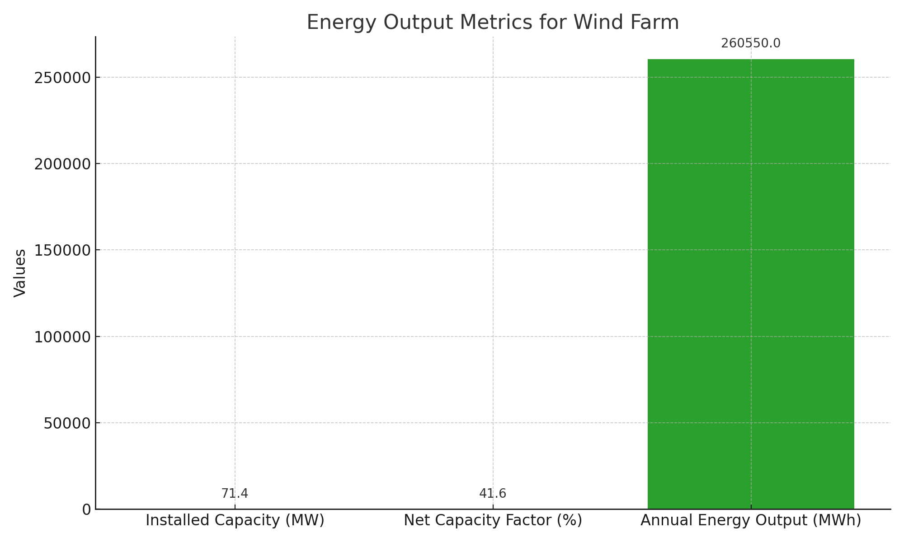
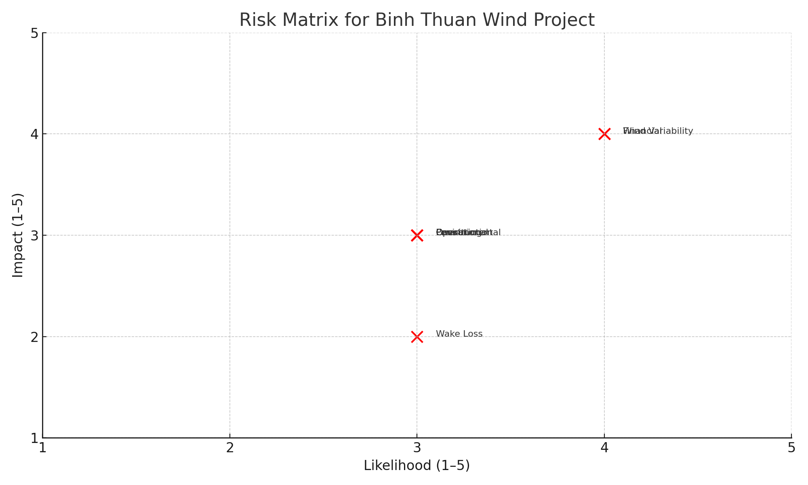

71.4 MW Wind Farm Conceptual Design in Binh Thuan Province, Vietnam
This project develops a comprehensive design for a 71.4 MW wind farm using Vestas V150-4.2 MW turbines in Binh Thuan Province, a location known for high wind speeds and low terrain complexity. The project evaluates technical, economic, and infrastructural feasibility, benchmarked against alternate sites in Texas and Connecticut.
1. Introduction & Motivation
With a national goal of 30% renewable energy generation by 2030, Vietnam is rapidly investing in wind power. Binh Thuan, offering a 7.45 m/s mean wind speed and flat terrain, is an ideal candidate for utility-scale onshore deployment.

2. Site Selection & Comparative Analysis
Three sites—Connecticut (CT), Texas City (TX), and Binh Thuan (VN)—were assessed. Vietnam showed the best combination of high power density, simple permitting, and cost efficiency.

3. Turbine Selection & Layout
17 Vestas V150 turbines were arranged in a 6-6-5 layout with spacing based on wind rose data to minimize wake losses.


4. Infrastructure & Wind Resource Monitoring
The site is adjacent to a 110 kV line and existing roads. Two met towers will be installed to measure wind variability across the 12 km² site.

5. Economic Analysis
The total CAPEX is estimated at $127.7M with a Levelized Cost of Energy (LCOE) of $65–70/MWh and an annual energy yield of ~260,550 MWh.


6. Risk Management Framework
A full matrix of technical, environmental, and financial risks was developed with mitigation strategies covering met tower campaigns, SCADA integration, and ESMPs.

7. Conclusion & Path Forward
- 17 turbines, 71.4 MW capacity
- NCF of 41.6% → AEP ~260,550 MWh/year
- LCOE of $65–70/MWh → high regional competitiveness
- Minimal new infrastructure costs due to existing 110 kV line
- Next step: detailed feasibility and wind measurement campaigns